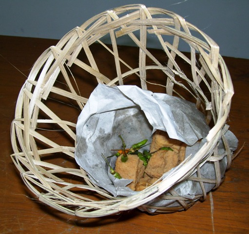

Sumatra
Nusa Tenggara
Maluku
Papua
Jawa Barat
Jawa Barat (yang biasa disingkat Jabar) atau dikenal dengan Tatar Sunda adalah sebuah provinsi di Indonesia. Ibu kota provinsi ini berada di Kota Bandung. Pada tahun 2021 penduduk provinsi Jawa Barat berjumlah 48.782.408 jiwa, dengan kepadatan 1.379 jiwa/km2. Berdasarkan sensus BPS pada tahun 2010, penduduk di Jawa Barat merupakan provinsi dengan penduduk terbanyak pertama di Indonesia, penduduk aslinya merupakan suku Sunda. Jawa Barat merupakan jantung budaya Sunda atau biasa disebut sebagai Tatar Sunda/Pasundan bersama dengan provinsi Banten meskipun banyak pendatang yang menetap dan tinggal dari berbagai suku bangsa lainnya di Indonesia terutama di wilayah metropolitan Jakarta dan migrasi di Cirebon sejak berabad-abad lamanya.
Informasi Umum
| Nama Provinsi | Kode Wilayah | Kode Internasional | Singkatan Umum | Ibu Kota | Hari Jadi | Lambang |
|---|---|---|---|---|---|---|
| Jawa Barat | 32 | ID-JB | Jabar | Bandung | 19 Agustus 1945 |
Budaya
Rumah Kasepuhan merupakan salah satu rumah adat di Cirebon, Jawa Barat. Rumah Kasepuhan Cirebon ini didirikan oleh Pangeran Cakrabuana pada 1529. Rumah adat ini sebenarnya merupakan perluasan dari keraton tertua di Cirebon, yakni Pakungwati. Bangunan rumah adat ini memiliki beberapa bagian atau tata letak ruang, dimulai dari pintu gerbang utama hingga bangunan induk keraton. Selain kental dengan nilai historisnya, Rumah Kasepuhan juga memiliki banyak nilai makna. Contohnya penggunaan jumlah tiang sebanyak 20 buah di salah satu bangunan Rumah Kasepuhan, untuk melambangkan sifat Ketuhanan.

Pangsi adalah salah satu pakaian adat Sunda. Pangsi merupakan setelan pakaian berupa baju kemeja polos yang agak longgar serta celana yang juga longgar dan panjangnya tidak melebihi mata kaki. Pakaian ini umumnya dipakai oleh laki-laki. Dalam kultur Sunda, Pangsi merupakan pakaian bagi laki-laki yang termasuk ke dalam kelompok atau golongan rakyat biasa. Pangsi pada awalnya hanya merujuk kepada celana longgar, sehingga sering disebut celana Pangsi. Seiring berjalannya waktu Pangsi merujuk terhadap setiap setelan pakaian yang memakai celana Pangsi sebagai bawahan, sehingga baju yang dipakai pun ikut disebut sebagai baju Pangsi.
Tari yang berasal dari Jawa Barat adalah tarian yang memiliki keunikan dan ciri khas tersendiri. Tentunya ciri khas ini tidak terlepas dari pengaruh budaya Jawa Barat itu sendiri, sehingga menghasilkan karya seni berupa tarian.
Tari yang berasal dari Jawa Barat adalah salah satunya tari Jaipong. tari jaipong adalah kesenian tradisional dari Jawa Barat. Pertama kali dikenalkan Gugum Gumbira dengan sebutan ketuk tilu, rupanya tarian ini memiliki dua versi sejarah.
Tari Topeng adalah salah satu tarian di wilayah Kesultanan Cirebon yang dalam sebutan sekarang berarti mencakup Cirebon, Indramayu, Subang, Jatibarang, Losari, Majalengka, dan Brebes.
Bahasa Sunda adalah sebuah bahasa dari cabang Melayu-Polinesia dalam rumpun bahasa Austronesia. Bahasa ini umumnya dituturkan oleh penduduk bersuku Sunda di wilayah bagian barat pulau Jawa. Bahasa Sunda juga dituturkan oleh diaspora Sunda di beberapa wilayah lain di Indonesia dan di luar Indonesia. Bahasa ini memiliki penutur setidaknya 42 juta orang pada tahun 2016. Bahasa Sunda terutama dipertuturkan di sebelah barat pulau Jawa, di daerah yang dijuluki Tatar Sunda (Pasundan).
Upacara ngaruwat merupakan tradisi yang berasal dari Subang, Jawa Barat, dan telah berumur ratusan tahun. Namun kesakralannya sebagai tradisi masyarakat agraris tetap terasa. Ngaruwat bumi adalah ungkapan syukur atas hasil yang diperoleh dari bumi. Pengharapan setahun kedepan, serta penghormatan kepada leluhur. Ruat dalam bahasa sunda artinya mengumpulkan dan merawat. Yang dikumpulkan dan dirawat adalah masyarakat dan hasil buminya. Dengan tradisi ruwatan bumi, padi memiliki tempat istimewa. Padi atau beras, dalam keyakinan masyarakat setempat, tidak hanya sebagai bahan pangan namun diyakini bersifat sakral dipandang suci.
Upacara ngaruwat merupakan tradisi yang berasal dari Subang, Jawa Barat, dan telah berumur ratusan tahun. Namun kesakralannya sebagai tradisi masyarakat agraris tetap terasa. Ngaruwat bumi adalah ungkapan syukur atas hasil yang diperoleh dari bumi. Pengharapan setahun kedepan, serta penghormatan kepada leluhur. Ruat dalam bahasa sunda artinya mengumpulkan dan merawat. Yang dikumpulkan dan dirawat adalah masyarakat dan hasil buminya. Dengan tradisi ruwatan bumi, padi memiliki tempat istimewa. Padi atau beras, dalam keyakinan masyarakat setempat, tidak hanya sebagai bahan pangan namun diyakini bersifat sakral dipandang suci.
Angklung adalah alat musik multitonal (bernada ganda) yang berkembang dari masyarakat Sunda. Alat musik ini dibuat dari bambu, dibunyikan dengan cara digoyangkan (bunyi disebabkan oleh benturan badan pipa bambu) sehingga menghasilkan bunyi yang bergetar dalam susunan nada 2, 3, sampai 4 nada dalam setiap ukuran, baik besar maupun kecil. Dictionary of the Sunda Language karya Jonathan Rigg, yang diterbitkan pada tahun 1862 di Batavia, menuliskan bahwa angklung adalah alat musik yang terbuat dari pipa-pipa bambu yang dipotong ujung-ujungnya menyerupai pipa-pipa dalam suatu organ, dan diikat bersama dalam suatu bingkai, digetarkan untuk menghasilkan bunyi.
Salah satu lagu daerah asal Jawa Barat yang populer ialah Cing Cangkeling. Lagu ini menggunakan lirik bahasa Sunda, yang hingga kini belum diketahui secara pasti siapa yang menciptakan lagu Cing Cangkeling tersebut. Menurut desas-desus, lagu tersebut diciptakan oleh Benny Corda, seorang gitaris dan pencipta lagu yang terkenal pada tahun 50-an. Ia merupakan anak dari Donny Corda yang menciptakan lagu daerah Jawa Barat yang sangat populer, yakni 'Bubuy Bulan'. Cing Cangkeling membawa arti yang cukup dalam, bahwa manusia perlu mengingat bahwa dalam hati yang bebas dan tenang akan mendapatkan dunia yang penuh rahmat dan berkah dari Tuhan YME.
Kuliner
Di Indonesia, siomai atau biasa disebut sebagai siomay identik dan dikenal sebagai makanan khas Jawa Barat, khususnya Kota Bandung. Siomai adalah sejenis dimsum yang merupakan makanan tradisional Tiongkok. Dalam bahasa Mandarin, makanan ini disebut shaomai, sementara dalam bahasa Kanton disebut siu maai. Dalam dialek Beijing, makanan ini juga ditulis sebagai 燒麥, dan juga dibaca shaomai. Kulit siomai serupa dengan kulit pangsit. Panganan ini tersebar di Indonesia karena dibawa oleh orang-orang Tionghoa.

Tahu Sumedang adalah tahu khas daerah Sumedang. Jika dibeli dalam jumlah banyak, umumnya menggunakan bongsang, anyaman bambu yang dapat memuat 25–100 buah tahu goreng.
Destinasi Wisata
Gunung Tangkuban Parahu adalah salah satu gunung yang terletak di Lembang, Kabupaten Bandung Barat, Provinsi Jawa Barat, Indonesia. Sekitar 20 km ke arah utara Kota Bandung, dengan rimbun pohon pinus dan hamparan kebun teh di sekitarnya, Gunung Tangkuban Parahu mempunyai ketinggian setinggi 2.084 meter. Bentuk gunung ini adalah Stratovulcano dengan pusat erupsi yang berpindah dari timur ke barat. Suhu rata-rata hariannya adalah 17oC pada siang hari dan 2 °C pada malam hari.

Gedung Sate merupakan gedung kantor Gubernur Jawa Barat. Gedung ini memiliki ciri khas berupa ornamen tusuk sate pada menara sentralnya, yang telah lama menjadi penanda atau markah tanah Kota Bandung yang tidak saja dikenal masyarakat di Jawa Barat, tetapi juga seluruh Indonesia bahkan model bangunan itu dijadikan pertanda bagi beberapa bangunan dan tanda-tanda kota di Jawa Barat Gedung berwarna putih ini mulai dibangun pada tahun 1920 dan masih berdiri kokoh hingga saat ini.